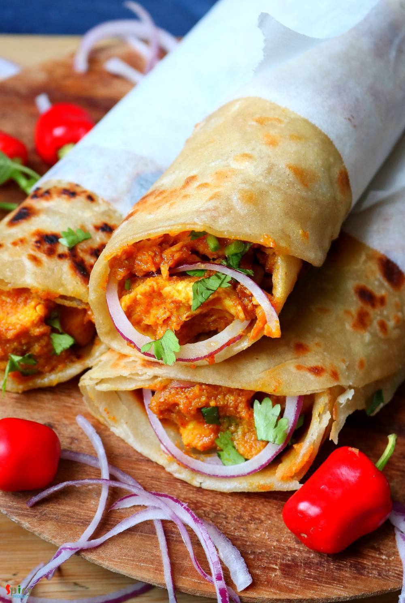
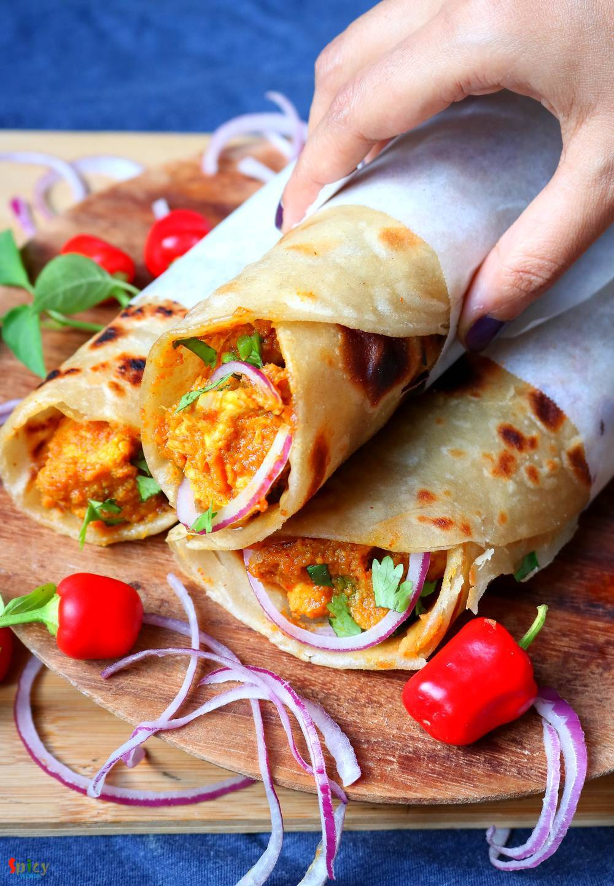

Simple and Easy Recipes
Previous Post
Bhuna Chicken Roll
© 2016 Spicy World, Published on: Mar 31, 2020
Chicken Bhuna is a popular Indian chicken dish all around the world. Bhuna means slow cooking with oil and spices. Bhuna Chicken is considered as a main course item. In Kolkata Kathi rolls are very popular street food item. You can get various kinds of rolls like Egg roll, Chicken kabab roll, Mutton roll, Paneer roll etc. They all tastes delicious. I punched the two ideas and created this Bhuna Chicken Rolls. This is my version of Bhuna Chicken roll and I am telling you it will definitely blow your mind. The taste and texture of the rolls are amazing. You can easily serve them as a brunch or dinner. Do give it a try and let me know how it turned out for you.

Ingredients
- For Paratha:
- 2 cups of all purpose flour / maida.
- Half cup of oil.
- 1 Tablespoon of salt.
- Luke warm water as required.
- For Chicken:
- 400 grams of boneless chicken.
- 1 Tablespoon of ginger garlic paste.
- Spice powder - 2 Teaspoons each of (turmeric powder, red chili powder, cumin and coriander powder).
- Salt and sugar as per your taste.
- 3 Tablespoons of oil.
- 3 Tablespoons of yogurt.
- Smooth paste of a medium sized onion.
- Little garam masala powder.
- 1/4th cup of water.
- For assembling:
- 1 small onion very thinly sliced.
- 2 green chilies, finely chopped.
- 2 Teaspoons of chat masala.
- 2 Tablespoons of lemon juice / vinegar.
- Some chopped coriander leaves.
- Butter paper to wrap the rolls.


Steps
In a large mixing bowl, add the flour, 3 Tablespoons of oil and salt. Mix well for 1-2 minutes.
Then gradually add warm water and start mixing.
Make a soft dough. Knead it well for 3-4 minutes or until it becomes smooth.
Apply little oil all over the dough and keep it covered for 30 minutes.
Add yogurt, ginger garlic paste, all of the spice powder, some salt and 1 Tablespoon of oil in the chicken pieces. Mix well and keep aside for 1-2 hours.
In another mixing bowl, add thinly sliced onion, chopped green chilies, chat masala and lemon juice, mix well and keep aside.
You can make this recipe normal paratha also. But I am making this with lachha paratha.
To make the lachha paratha, take little bigger than lemon size portion from the dough.
Roll it little bit with the help of some flour.
Add little oil and spread with a spoon. Then sprinkle some dry flour.
Make a cut from center towards the edge with a knife, then roll tightly from one end to the other end.
It will look like a cone, press it gently with your palm and give a patty like shape.
Keep them covered for 15 minutes.
In the meantime, heat oil in a pan.
Add the onion paste, cook for 7-8 minutes.
Then add the marinated chicken, cook for 5 minutes on high flame.
Add little water and cook until the chicken becomes soft.
The gravy should be thick and dry.
Lastly add some garam masala powder, mix well and turn off the heat.
Roll one layered ball with the help of some dry flour to a semi thin disc.
Place it on a hot tawa, keep one side for 1 minute.
Flip it to the other side, spread little, again flip it to the other side and apply some oil.
Fry both side for almost 3 minutes on medium flame, then take it out from the pan.
To assemble the roll, place one paratha on a flat surface.
Add 3-4 Tablespoons of bhuna chicken filling.
Then spread 1 Tablespoon of onion mixture all over the chicken and some chopped coriander leaves.
Now roll the paratha tightly with the stuffing inside.
Wrap half of the roll with a butter paper or tissue.
Your bhuna chicken roll is ready to serve.
Serve this hot ..
")
Previous Post